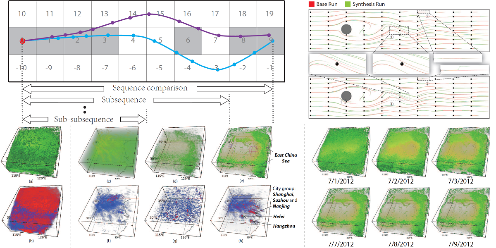
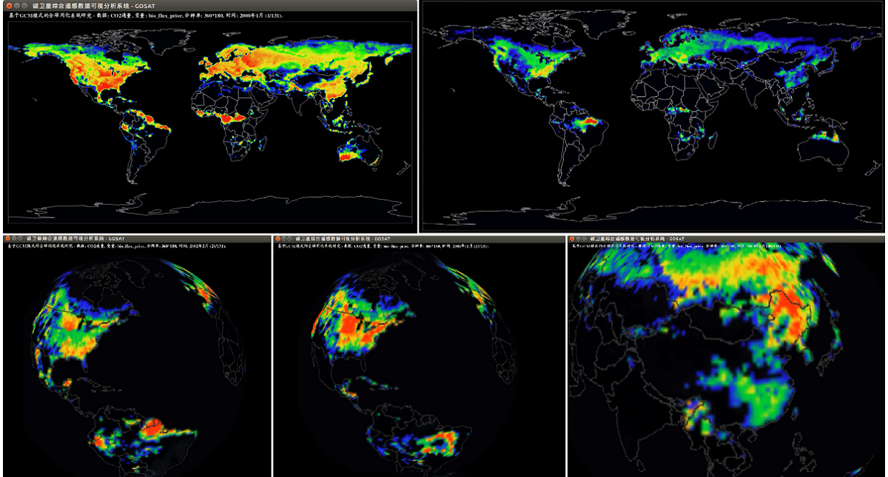
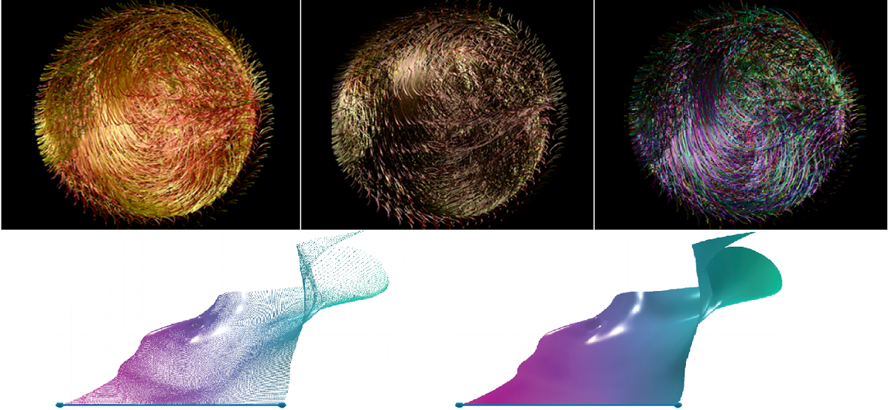
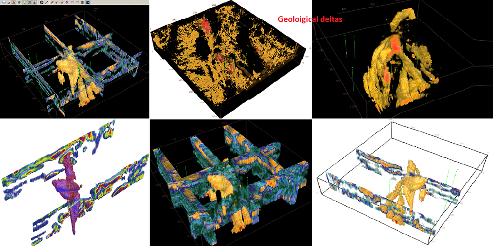
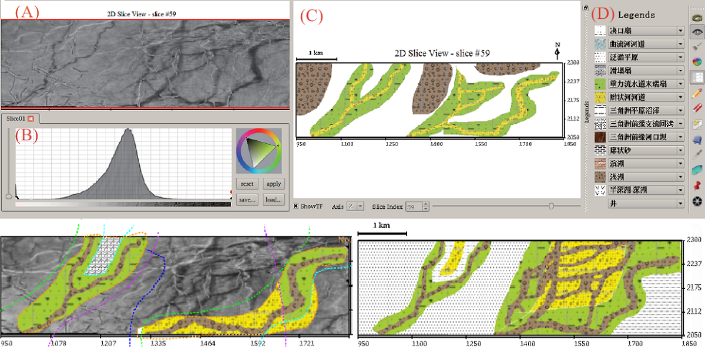

Richen Liu 刘日晨
Ph.D., Lecturer, Supervisor of master
School of Computer Science and Technology, Nanjing Normal University
Research Interests
(1) data visualization: scientific visualization (ensemble/flow/volume vis., etc.), visual analytics, information visualization
(2) computer vision: 3D reconstruction from a single image, calibration, etc.
Addr: Mingli Building, Nanjing Normal University, No.1 Wenyuan Road, Qixia District, Nanjing, P.R.China, 210023
Email: richen.liu[at]njnu[dot]edu[dot]cn | richen[at]pku[dot]edu[dot]cn (欢迎优秀本科生、研究生邮件咨询加入研究组)
Education
-
Ph.D.: 2012.09 - 2017.01, PKU Visualization and Visual Analytics Group, School of EECS, supervised by Prof. Xiaoru Yuan, Peking University (Graduated with Honors)
-
M.Sc.: School of Computer Science (National Key Lab of Fundamental Science on Synthetic Vision), Sichuan University (Graduated with Honors)
-
B.Eng.: School of Software, Sichuan University (Graduated with Honors)
Research & Fundings
-
National Natural Science Foundation of China (NSFC No. 61702271), 2018.01-2020.12, Principal Investigator.
-
National Natural Science Foundation of China (NSFC No. 41971343), 2020.01-2023.12, Participant.
-
National Natural Science Foundation of China (NSFC No. 61672055), 2017.01-2020.12, Participant.
-
Mengya Foundation, 2007.05-2008.04, Principal Investigator.
Publications
- Richen Liu, Liming Shen#, Xueyi Chen#, Genlin Ji, Bin Zhao, Chao Tan, and Mingjun Su.
Sketch-Based Slice Interpretative Visualization for Stratigraphic Data. JIST, 63(6):xx-xx, Nov., 2019. (SCI online, "#": undergraduate group members)
| DOI | PDF | - Richen Liu, Genlin Ji, and Mingjun Su.
Domain-Specific Visualization System Based on Automatic Multi-Seed Recommendations: Extracting Stratigraphic Structures. SP&E, xx(xx):xx-xx, 2019. (CCF B Journal, SCI online)
| DOI | PDF | - Xueyi Chen#, Liming Shen#, Ziqi Sha#, Richen Liu*, Siming Chen, Genlin Ji, and Chao Tan.
A Survey of Multi-Space Techniques in Spatio-Temporal Simulation Data Visualization. Visual Informatics, 3(3):129-139, 2019. (JA version of ChinaVis 2019 Survey, "#": undergraduate group members)
| DOI | PDF | - Chao Tan, Genlin Ji, Richen Liu, and Yanqiu Cao.
LTSA-LE: A Local Tangent Space Alignment Label Enhancement Algorithm. Tsinghua Science and Technology, xx(x):xx-xx, 2019. (SCI)
| DOI | PDF | - Min Gao#, Yuzhe Xiang#, Lijun Wang#, Richen Liu*, Sitong Fang#, Siming Chen, Jingle Jia#, Genlin Ji, and Bin Zhao.
Histogram-Based Nonlinear Transfer Function Edit and Fusion. Lecture Notes in Computer Science (The 10th Int. Conf. on Image and Graphics, ICIG'19), 11902:300-315, Nov, 2019. ("#": undergraduate group members)
| DOI | PDF | - Xueyi Chen#, Liming Shen#, Ziqi Sha#, Richen Liu*, Siming Chen, Genlin Ji, and Chao Tan.
Multi-Space Analysis Techniques for Spatio-Temporal Simulation Data Visualization: A Survey. ChinaVis 2019 Survey, 2019. (Best Survey Paper Award; "#": undergraduate group members)
| DOI | PDF | - Min Gao#, Lijun Wang#, Jingle Jia#, Yimin Chen, Richen Liu*, Liming Shen, Xueyi Chen, and Mingjun Su.
Interactive Geological Visualization Based on Quadratic-Surface Distance Query. Journal of Electronic Imaging, 28(2):021009 (1-11), 2018. (SCI, "#": undergraduate group members)
| DOI | PDF | - Richen Liu, Hanqi Guo, and Xiaoru Yuan.
User-Defined Feature Comparison for Vector Field Ensembles. Journal of Visualization, 20(2):217–229, 2017. Springer. (SCI)
| DOI | PDF | - Richen Liu, Hanqi Guo, Jiang Zhang, and Xiaoru Yuan.
Comparative Visualization of Vector Field Ensembles Based on Longest Common Subsequence. IEEE Pacific Visualization (IEEE PacificVis'16), pages 96-103, Taipei, Apr. 19-22, 2016. (CCF conf., regular oral paper)
| DOI | PDF (5.5 MB) | - Richen Liu, Zhihong Wu, and Dequan Guo.
Metric Reconstruction of Straight Homogeneous Generalized Cylinders with Elliptical Cross-Section from a Single Image. Journal of Electronic Imaging, 24(6):061107 , Nov. 2015. (SCI)
| DOI | PDF | - Richen Liu, Hanqi Guo, and Xiaoru Yuan.
A Bottom-Up Scheme for User-Defined Feature Comparison in Ensemble Data. ACM SIGGRAPH Asia 2015 Symposium on Visualization in High Performance Computing, Kobe, Japan, Nov. 2-5, 2015. (regular oral paper)
| DOI | PDF | - Richen Liu, Hanqi Guo, and Xiaoru Yuan.
Seismic Structure Extraction Based on Multi-scale Sensitivity Analysis. Journal of Visualization, 17(3):157-166, 2014. Springer. (SCI)
| DOI | PDF (2.3 MB) | - Hanqi Guo, Jiang Zhang, Richen Liu, Lu Liu, Xiaoru Yuan, Jian Huang, Xiangfei Meng, and Jingshan Pan.
Advection-based Sparse Data Management for Visualizing Unsteady Flow. IEEE Transactions on Visualization and Computer Graphics (IEEE SciVis'14), 20(12):2555-2564, 2014. (CCF conf., SCI)
| DOI | PDF (4.8 MB) | - Bowen Yu, Richen Liu, and Xiaoru Yuan.
MLMD: Multi-Layered Visualization for Multi-Dimensional Data. Eurographics Conference on Visualization 2013 (EuroVis Short Paper), pages 33-40, Leipzig, Germany, June 17 - June 21, 2013. (CCF conf.)
| DOI | PDF (4.8 MB) |
- Rongtao Qian#, Sitong Fang#, Yinhui Ge#, Lijun Wang#, and Yuzhe Xiang.#
Category Data Visualization Based on Obstacle Avoidances. IEEE International Conference on ICPDS 2019 (IEEE ICPDS '19), 2019. (accepted, regular oral paper, "#": supervised undergraduate group members)
| DOI | PDF | - Liming Shen#, Xueyi Chen#, Richen Liu*, Rongtao Qian#, Genlin Ji, and Chao Tan.
BalloonVis: An Energy Optimization-Based Set Visualization Tool to Explore Literature Data. ChinaVis 2019 (Poster Paper), 2019. ("#": undergraduate group members)
| DOI | PDF | - Richen Liu, Hanqi Guo, and Xiaoru Yuan.
A Bottom-Up Scheme for User-Defined Feature Exploration in Vector Field Ensembles. IEEE Visualization 2015 (IEEE VIS Poster Paper), Chicago, Illinois, USA, October 25-30, 2015. (CCF conf., EI).
| DOI | PDF | - Richen Liu, Hanqi Guo, Jiang Zhang, and Xiaoru Yuan.
Longest Common Subsequence Based Multi-Scale Analysis for Ensemble Data. IEEE Pacific Visualization 2015 (Poster Paper), Hangzhou, China, April 14-17, 2015. (CCF conf.).
| DOI | PDF | - Fan Hong, Qingya Shu, Jiang Zhang, Richen Liu, Xiaoru Yuan, and Xiaoguang Ma.
An Integrated Visualization System for Multi-Source Carbon Concentration Datasets. IEEE Pacific Visualization 2016 (Poster Paper), Taipei, China, April 19-22, 2016. (CCF conf.).
| DOI | PDF | - Dequan Guo, Hao Yin, and Richen Liu.
Comparison Imaging Effect in Ultrasound. The 8th International Conference on BMEI, pages 732-736, Feb. 2016. (EI conf.)
| DOI | PDF |
- Qingya Shu, Richen Liu, Fan Hong, Jiang Zhang, and Xiaoru Yuan.
State-of-the-Art of Ensemble Visualization. Journal of Software, 29(2):506-523, 2018. (EI Journal)
| DOI | PDF | - Da Yuan, Richen Liu, and Xiaoru Yuan.
Seismic Visualization. Journal of Computer-Aided Design & Computer Graphics, 27(1):36-45, 2015. (EI Journal)
| DOI | PDF (1.0 MB) | - Richen Liu, Yiguang Liu, Yongzhong Li, and Zhihong Wu.
A Cooperating Calibration Algorithm Based on the Cameras with Different Precision. Journal of Optoelectronics Laser, Mar. 2010. (EI journal)
| DOI | PDF | - Zhihong Wu, Richen Liu, and Lin Gan.
Metric Three-Dimensional Information Extraction Method Based on Straight Homogeneous Generalized Cylinders. Journal of University of Electronic Science and Technology of China, May. 2011. (EI journal)
| DOI | PDF | - Richen Liu, Yiguang Liu, Xin Yin, and Yimin Zhao.
3D Information Extraction Algorithm based on a Single Image. Computer Science, May. 2010. (CSCD journal)
| DOI | PDF |
Copyright Reg.
- Software copyright: 2019SR1158623.
- Software copyright: 2019SR1158617.
- Software copyright: 2018SR1019012.
- Software copyright: 2018SR1045221.
Projects
-

LCSS-based Comparative Visualization for Vector-Field Ensembles
We employ a text analysis algorithm, i.e.,longest common subsequence (LCSS) to compute the distance among vector field ensembles. The LCSS approach is robust to outliers, missing data and sampling rate. It can reveal temporal trends in the data at low storage cost and avoids tracing pathlines repeatedly.
-

Carbon Emission Data Visualization System (IAP.CAS project)
A project collaborated with Institute of Atmospheric Physics (IAP), Chinese Academy of Sciences (CAS).
-

Large-Scale (TB-Scale) Flow Data Visualization
The data-size is TB-scale (2.2 TB), we use x86-based supercomputer in National Supercomputing Center in Jinan (国家超算中心-济南) and a cluster with 8 computation nodes in PKU for testing. The pathlines and streaklines are traced in parallel, then the streak surface is generated.
{kind=link}
{kind=link}
{kind=link}
-

Seismic Visualization System: 3D Volume Explorer (PetroChina project)
Seismic data is well-known as noisy, discontinuous, and low resolution. A bit array-based 3D texture is designed to organize different types of domain-specific interactions, it supports: 1) interactions flexible switching; 2) progressive seed point tracing; 3) domain-specific stratigraphic display modes.
-

Seismic Visualization System: 2D Slice Analyzer (PetroChina project)
Slice analyzer helps geologists get better understanding of stratigraphic structures and the distribution of the geological materials (underground flow path, river delta, floodplain, etc.) A partitioning scheme and a geological symbol definition algorithm are proposed to illustrate the slice with homologous characteristics according to domain knowledge.
{kind=link}
{kind=link}
Talks
-
My Talks (受邀报告、会议报告等)
Services
-
Program Committee Member:
ChinaVis 2019, ChinaVis 2018, HPC China 2018, ChinaVis 2017, HPC China 2017. -
Reviewer:
IEEE VIS (CCF conf.), PacificVis (CCF conf.), ICIG, HPC China, ChinaVis, ChinaVis Data Challenge, Journal of Visualization (SCI), CSAE. -
Volunteer:
"Visual Analytics 2014",
Volunteer for "Visualization Workshop 2013"
Excellent Volunteer by an NGO in Chengdu 2010. -
Member:
ACM, IEEE, CCF, CSIG (China Society of Image and Graphics), Nanjing Society of Multimedia Info. Tech.
Honors & Awards
Best Survey Paper Award, ChinaVis 2019, 2019.
Beijing Excellent Graduated Student (北京市优秀毕业生), 2017
Excellent Graduated Student of Peking University (北京大学优秀毕业生), 2017
May 4th Scholarship, Peking University (五四奖学金), 2015
Merit Student, Peking University (北京大学三好学生), 2015
Zheng Lianfa Scholarship (郑连发奖学金), 2015
Fujian Province Outstanding Student (福建省优秀学子), 2015
Graduate Student Special Scholarship, Peking University, 2015
Academic Excellence Award, Peking University, 2014
Excellent Graduated Student of Sichuan University, 2011
Excellent Volunteer, by an NGO in Chengdu, 2010
Zhisheng Scholarship, Sichuan University, 2009
Excellent Graduated Student of Sichuan University, 2008
National Encouragement Scholarship, Sichuan University, 2007